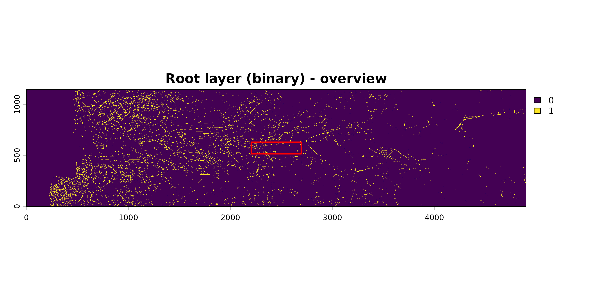
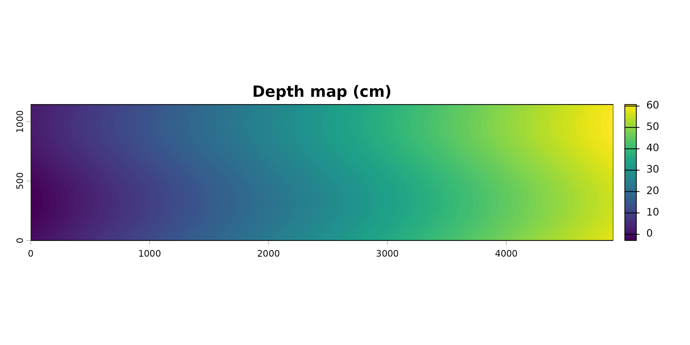
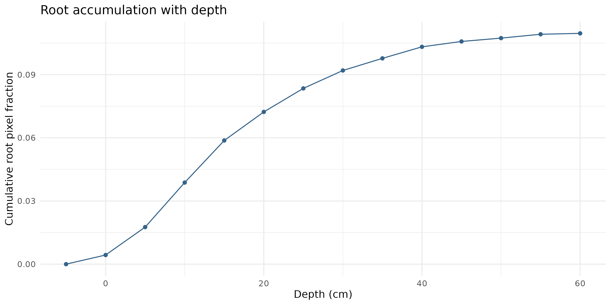

Minirhizotron Scans Analysis with Rootopia in R
Johannes Cunow
Source:vignettes/MinirhizotronScans_vignettes.Rmd
MinirhizotronScans_vignettes.RmdMinirhizotron Scans Analysis with Rootopia
Introduction
This vignette walks through the individual-function workflow for analysing minirhizotron images — loading, calibrating, depth-mapping, and extracting root traits step by step. It is aimed at users who want full control over each processing stage or who are working on a specific subset of functions.
New to Rootopia? If you want to process a whole set of images in one go, the Batch Processing vignette wraps this entire workflow into a single
root_depth_metrics()call. Start there.
Prerequisite: Rootopia works with already-segmented images. Segmentation must be done beforehand using RootDetector or RootPainter.
If a tube constitues of multiple overlapping images, consider stitching Image Stitching
Installation
# install.packages("remotes")
# remotes::install_github("jcunow/Rootopia")
library(Rootopia)
library(terra)
library(tidyverse)Workflow overview
- (Image Stitching & Segmentation, see: Image Stitching)
- Load images
- (Optional) Rotation censor — align field of view across sessions
- Create depth map
- Bin depths
- Extract root traits per depth bin (pixels, length, diameter)
- Compute landscape and colour metrics per depth bin
- Derive distribution indices
- Root turnover (two-timepoint comparison)
Per depth bin is the recurring theme below. Two patterns cover every trait:
- Whole profile in one call with
terra::zonal()— fast, for traits that reduce to a per-zone sum or mean (pixel counts, mean diameter).- One slice at a time with
zoning()— for traits whose function needs a whole image (root length, landscape metrics, colour). You compute the trait for a single depth, then wrap that in a loop to cover the full profile.Section 5 introduces both and shows how to scale a single-slice computation to every depth bin.
1. Load images
load_flexible_image() accepts SpatRasters, arrays,
matrices, and file paths. This is how you load your own files:
# Segmented image from RootDetector or RootPainter
seg_img <- load_flexible_image(
"path/to/segmented_image.tif",
output_format = "spatrast",
normalize = FALSE,
binarize = TRUE,
select.layer = NULL
)
# RGB scan for colour analysis
rgb <- load_flexible_image(
"path/to/rgb_image.tif",
output_format = "spatrast",
normalize = FALSE,
binarize = FALSE
)For this vignette we use the bundled example data so every step below runs:
# 3-band RootDetector output; layer 2 is the root channel
data(seg_Oulanka2023_Session01_T067)
seg_img <- terra::rast(seg_Oulanka2023_Session01_T067)
# RootDetector layers are 0/255; binarize the root channel to 0/1 so that
# pixel sums and the void mask (abs(root_layer - 1)) are meaningful.
root_layer <- terra::ifel(seg_img[[2]] > 0, 1, 0)
# RGB scan (a different session of the same tube, for the colour demo)
data(rgb_Oulanka2023_Session03_T067)
rgb <- terra::rast(rgb_Oulanka2023_Session03_T067)
terra::plot(root_layer, main = "Root layer (binary)")
2. Rotation censoring (optional, recommended for multi-session studies)
When the same tube is scanned across sessions, the scanner may have
rotated slightly. Use rotation_censor() to crop each image
to the rows that are present in every session, so root counts are
directly comparable. See the Rotation Bias vignette for how
to estimate the rotation shift between sessions.
# Crop to a 1800-pixel-wide window centred on the estimated rotation centre.
# Here we use half the image width as a simple default. If you have multiple
# sessions, consider estimating the rotation shift between sessions with
# `estimate_rotation_shift()` and adjust the center offset accordingly.
r0 <- round(dim(seg_img)[1] / 2, 0)
seg_censored <- rotation_censor(
seg_img,
center.offset = r0,
fixed.rotation = TRUE,
fixed.width = 1800
)Rotation censoring changes the image dimensions, so apply it before the depth map and keep every downstream raster on the censored grid. The rest of this vignette uses the uncensored example image.
3. Create the depth map
create_depthmap() assigns a soil depth value (cm) to
every pixel based on tube geometry (diameter, tilt angle, DPI) and a
sinusoidal correction for the curvature of cylindrical tubes.
Important parameters:
| Parameter | Description |
|---|---|
sinoid |
TRUE for cylindrical minirhizotron tubes;
FALSE for flat windows |
tube.thicc |
Inner tube diameter in cm (typically 4.4 or 7 cm) |
tilt |
Insertion angle from vertical in degrees (often 30–45°) |
dpi |
Scanner resolution |
start.soil |
Depth offset in cm — shifts the zero point. Provide from field calibration data. |
center.offset |
Fractional position of the rotational centre (0–1). 0.5 = centred. |
# `mask` flags foreign objects (e.g. tube edges / tape) to exclude from depth
# attribution. Here it is derived from the RootDetector layers.
mask <- seg_img[[1]] - seg_img[[2]]
mask[mask == 255] <- NA
depth_map <- create_depthmap(
img = seg_img,
mask = mask,
sinoid = TRUE,
tube.thicc = 7, # cm — measure your own tube
tilt = 45, # degrees
dpi = 150,
start.soil = 2.9, # cm — from in-situ calibration
center.offset = 0.5 # 0 = top of tube, 1 = bottom
)
# create_depthmap() returns the map on its own grid; align it to the segmented
# image so depth and root rasters share extent/resolution (required for
# terra::zonal() and zoning() below).
depth_map <- terra::flip(terra::t(depth_map))
terra::ext(depth_map) <- terra::ext(root_layer)
terra::plot(depth_map, main = "Depth map (cm)")
On
start.soil: accurate depth attribution requires knowing where the soil surface is in the image. In-situ calibration (marking the tube at installation) is the most reliable approach. Without calibration data, usestart.soil = 0and interpret depths as relative to the top of the scan.
4. Bin depths
binning() rounds continuous depth values to discrete
intervals. The bin width (nn) should match your analysis
scale — 5 cm is a common choice.
depth_bins <- binning(depthmap = depth_map, nn = 5, round.option = "rounding")
# The set of depth bins we will iterate over for per-slice traits
depths <- sort(unique(terra::values(depth_bins, mat = FALSE)))
depths <- depths[!is.na(depths)]
depths
#> [1] -5 0 5 10 15 20 25 30 35 40 45 50 55 605. Extract root traits per depth bin
5a. Root pixels and void pixels — whole profile with
zonal()
terra::zonal() aggregates a value raster over the zones
of a class raster in one pass. This is the fast path for traits that are
just a per-bin sum or mean.
# Root pixels per depth bin
root_px_by_depth <- terra::zonal(root_layer, depth_bins, "sum", na.rm = TRUE)
colnames(root_px_by_depth) <- c("depth", "rootpx")
# Void pixels
void_layer <- abs(root_layer - 1)
void_px_by_depth <- terra::zonal(void_layer, depth_bins, "sum", na.rm = TRUE)
colnames(void_px_by_depth) <- c("depth", "voidpx")
depth_data <- merge(root_px_by_depth, void_px_by_depth, by = "depth")
depth_data$rootpx.density <- depth_data$rootpx /
(depth_data$rootpx + depth_data$voidpx) * 100
head(depth_data)
#> depth rootpx voidpx rootpx.density
#> 1 -5 0 5158 0.000000
#> 2 0 7959 277009 2.792945
#> 3 5 24281 453463 5.082429
#> 4 10 38748 438949 8.111418
#> 5 15 36590 441143 7.659090
#> 6 20 24861 452872 5.2039535b. Root length for a single depth slice —
zoning() + root_length()
Root length (Kimura method) is computed from a skeleton image, so it
needs a whole raster rather than a per-pixel reduction.
zoning() masks the skeleton to one depth bin (everything
outside the bin becomes NA, the grid is kept), and
root_length() then measures just that slice.
# Skeletonize the full root layer once
skl <- skeletonize_image(root_layer, verbose = FALSE)
# Traits for one specific depth slice (the 10 cm bin)
skl_10cm <- zoning(skl, mode = "depth", depth_map = depth_bins, depth = 10)
len_10cm <- root_length(skl_10cm, unit = "cm", dpi = 150, show_messages = FALSE)
len_10cm
#> [1] 208.36975c. Scale to the whole profile — loop the single-slice computation
To get the trait for every depth, wrap the single-slice code in a
loop over depths. The same pattern works for any function
that takes a whole image.
length_by_depth <- do.call(rbind, lapply(depths, function(d) {
skl_d <- zoning(skl, mode = "depth", depth_map = depth_bins, depth = d)
# Empty bins have no skeleton to measure, so their length is 0
has_root <- terra::global(skl_d, "sum", na.rm = TRUE)[1, 1] > 0
data.frame(
depth = d,
rootlength = if (has_root) root_length(skl_d, unit = "cm", dpi = 150,
show_messages = FALSE) else 0
)
}))
depth_data <- merge(depth_data, length_by_depth, by = "depth")
# Root length density: cm root per cm² of imaged tube wall in that bin
depth_data$rootlength.density <- depth_data$rootlength /
((depth_data$rootpx + depth_data$voidpx) / (150 / 2.54)^2)
head(depth_data)
#> depth rootpx voidpx rootpx.density rootlength rootlength.density
#> 1 -5 0 5158 0.000000 0.00000 0.0000000
#> 2 0 7959 277009 2.792945 54.37009 0.6653943
#> 3 5 24281 453463 5.082429 136.48109 0.9963051
#> 4 10 38748 438949 8.111418 208.36966 1.5212376
#> 5 15 36590 441143 7.659090 211.75244 1.5458176
#> 6 20 24861 452872 5.203953 128.68449 0.93941195d. Root diameter — whole profile with zonal()
Diameter is a per-pixel value, so once you have the diameter raster
you are back in zonal() territory.
diam_result <- root_diameter(
root_layer,
skeleton.img = skl,
unit = "cm",
select.layer = NULL
)
# Align the diameter raster to the depth grid before zonal aggregation
terra::ext(diam_result$diameter_rast) <- terra::ext(depth_bins)
diam_by_depth <- terra::zonal(diam_result$diameter_rast, depth_bins,
"mean", na.rm = TRUE)
colnames(diam_by_depth) <- c("depth", "avg.diameter")
depth_data <- merge(depth_data, diam_by_depth, by = "depth")
head(depth_data)
#> depth rootpx voidpx rootpx.density rootlength rootlength.density avg.diameter
#> 1 -5 0 5158 0.000000 0.00000 0.0000000 NaN
#> 2 0 7959 277009 2.792945 54.37009 0.6653943 0.01899533
#> 3 5 24281 453463 5.082429 136.48109 0.9963051 0.01946714
#> 4 10 38748 438949 8.111418 208.36966 1.5212376 0.01948757
#> 5 15 36590 441143 7.659090 211.75244 1.5458176 0.01883529
#> 6 20 24861 452872 5.203953 128.68449 0.9394119 0.018665636. Landscape and colour metrics
Both of these are computed per depth slice with the
same zoning() loop introduced in 5c.
Landscape metrics (spatial structure)
lsm_list <- lapply(depths, function(d) {
slice <- zoning(root_layer, mode = "depth", depth_map = depth_bins, depth = d)
# Skip depth bins that contain no roots
if (terra::global(slice, "sum", na.rm = TRUE)[1, 1] == 0) return(NULL)
root_scape_metrics(
img = slice,
indexD = d,
metrics = c("lsm_c_np", "lsm_c_enn_mn", "lsm_l_ent")
)
})
lsm_df <- do.call(rbind, lsm_list)Note: landscape metrics are slow (one call per depth bin per image) and require the suggested
landscapemetricspackage, so this chunk is not run here. Enable it when you specifically need patch-level indices.
Colour metrics
tube_coloration() is the colour extractor here — exactly
as in the Flatbed Scans
vignette. The only extra step for minirhizotron data is grid alignment:
the RGB scan and the segmentation often come off the scanner on slightly
different grids, and per-pixel masking
(rgb[seg == 0] <- NA) requires identical grids.
terra::resample() puts the RGB onto the segmentation grid;
if your RGB and segmentation already share a grid you can skip it.
# Align RGB to the segmented grid (skip if they already match)
rgb_aligned <- terra::resample(rgb, root_layer, method = "bilinear")
colour_list <- lapply(depths, function(d) {
slice_seg <- zoning(root_layer, mode = "depth", depth_map = depth_bins, depth = d)
slice_rgb <- zoning(rgb_aligned, mode = "depth", depth_map = depth_bins, depth = d)
# Split the slice into root vs. background pixels
root_rgb <- slice_rgb; root_rgb[slice_seg == 0] <- NA
bg_rgb <- slice_rgb; bg_rgb[slice_seg == 1] <- NA
# Skip depth bins that contain no roots (nothing to colour)
if (all(is.na(terra::values(root_rgb[[1]], mat = FALSE)))) return(NULL)
data.frame(
depth = d,
setNames(tube_coloration(root_rgb), paste0(names(tube_coloration(root_rgb)), "_root")),
setNames(tube_coloration(bg_rgb), paste0(names(tube_coloration(bg_rgb)), "_bg"))
)
})
colour_df <- do.call(rbind, colour_list) # NULLs from empty bins are droppedLooking for root branching order (main axis vs. laterals)? That analysis has no depth dimension, so it lives in the Flatbed Scans vignette. You can still run it on a minirhizotron skeleton — just compute it once for the whole image rather than per depth bin.
7. Distribution indices
These tube-level summary metrics require a complete depth profile.
# Mean rooting depth — depth-weighted mean
mrd_val <- MRD(w = depth_data$depth, roots = depth_data$rootlength.density)
# Root Penetration Index — how evenly roots are distributed with depth (-1 to 1)
rpi_val <- RPI(roots = depth_data$rootlength.density, w = depth_data$depth)
# Total length density — sum over the full profile
total_ld <- sum(depth_data$rootlength.density * 5, na.rm = TRUE)
cat(sprintf("MRD: %.2f RPI: %.3f Total length density: %.4f\n",
mrd_val, rpi_val, total_ld))
#> MRD: 19.47 RPI: 0.899 Total length density: 43.6782root_accumulation() complements these by returning the
cumulative profile itself — useful for plotting how root mass/length
accumulates with depth, or for comparing the shape of
accumulation curves between tubes/plots.
# Cumulative root pixel count with depth, per tube
depth_data$Tube <- "T067" # add a grouping column if not already present
depth_data$rootpx.cumulative <- root_accumulation(
depth_data,
group = "Tube",
depth = "depth",
variable = "rootpx",
stdrz = "relative" # "counts" (raw), "additive" (/max), or "relative" (/sum)
)
plot(depth_data$depth, depth_data$rootpx.cumulative, type = "l",
xlab = "Depth (cm)", ylab = "Cumulative root pixel fraction",
main = "Root accumulation with depth")
stdrz = "relative" rescales the cumulative curve to end
at 1, which makes accumulation curves directly comparable between tubes
that differ in total root abundance — only the shape of the
depth distribution is compared.
8. Root turnover (two-timepoint comparison)
data(skl_Oulanka2023_Session01_T067)
data(skl_Oulanka2023_Session03_T067)
t1 <- terra::rast(skl_Oulanka2023_Session01_T067)
t2 <- terra::rast(skl_Oulanka2023_Session03_T067)
turnover <- root_turnover(
img1 = t1,
img2 = t2,
method = "tc", # total-change family
tc.method = "kimura", # length estimator within that family
dpi = 150,
unit = "cm"
)
#> Diagonal: 457958 | Orthogonal: 459143
#> Diagonal: 431284 | Orthogonal: 432437
print(turnover)
#> standingroot_t1 standingroot_t2 production newroot.per_t1 newroot.per_t2
#> 1 17875.84 16835.23 -1040.613 -0.0582 -0.06189. Visualise
library(ggplot2)
ggplot(depth_data, aes(x = depth, y = rootlength.density)) +
geom_col(fill = "steelblue4") +
coord_flip() +
scale_x_reverse() +
theme_minimal() +
labs(x = "Soil depth (cm)", y = "Root length density (cm / cm²)",
title = "Root length density profile")What to read next
-
Batch Processing — the
same workflow in a single
root_depth_metrics()call, with fault tolerance and ETA logging - Flatbed Scans — trait extraction without a depth dimension, including root branching order
- Rotation Bias — correcting for tube rotation between sessions
- Function reference — full documentation for every exported function